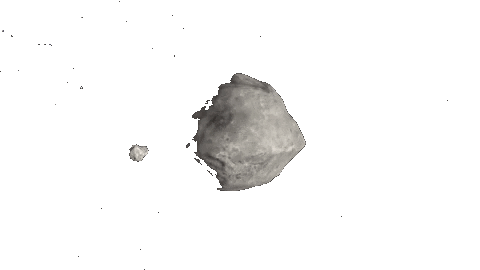
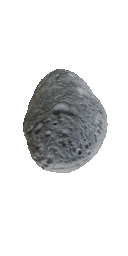
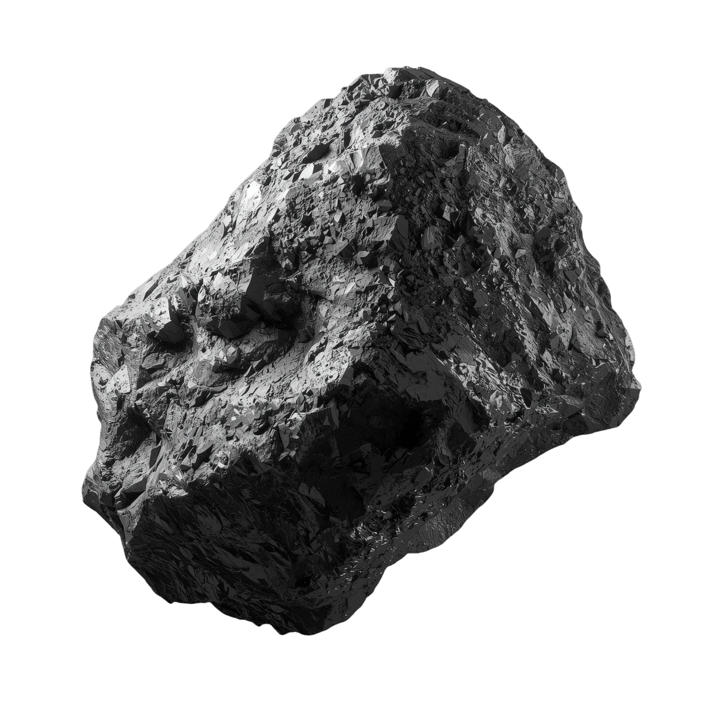
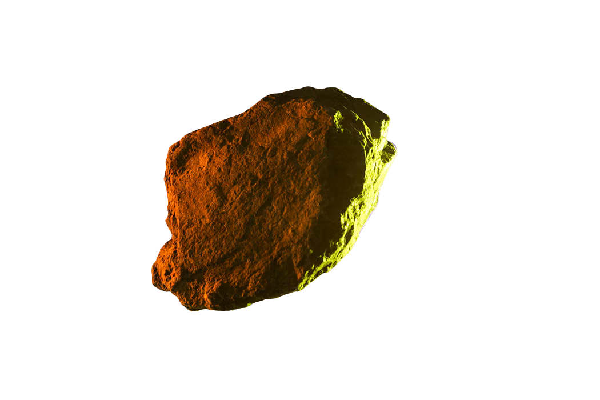
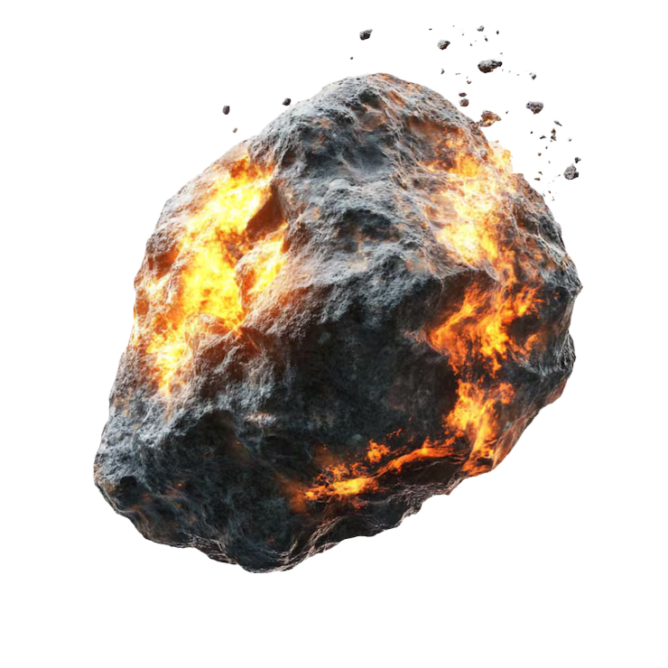
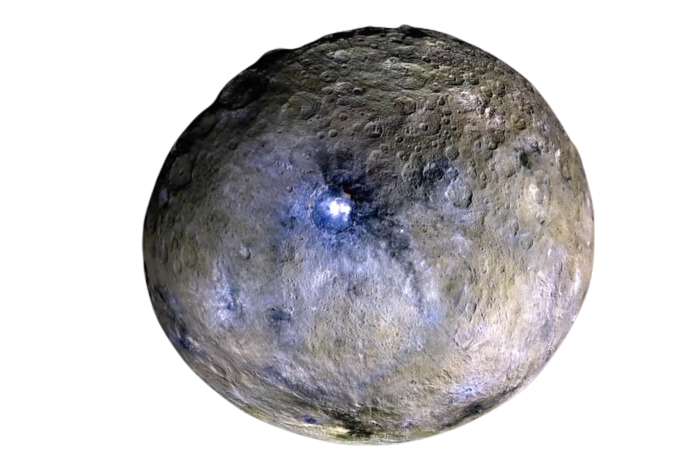
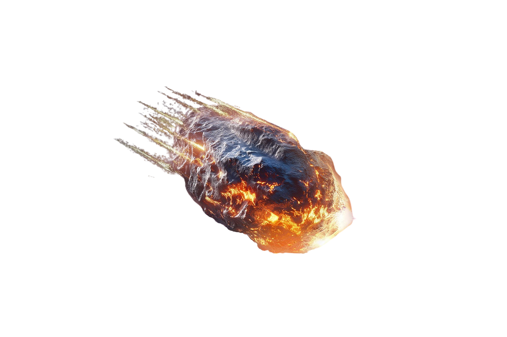
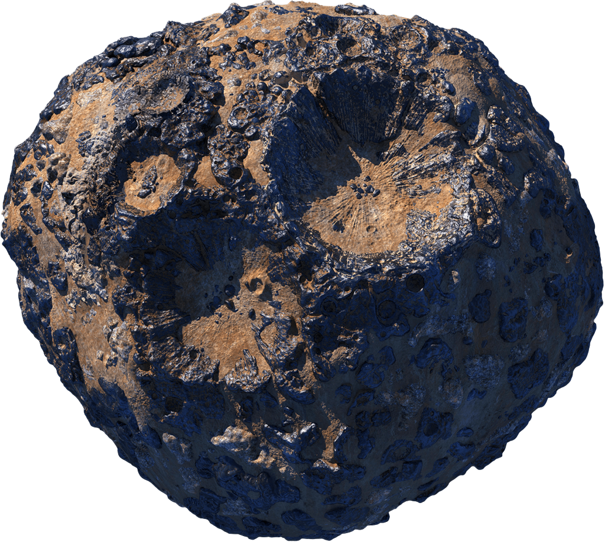
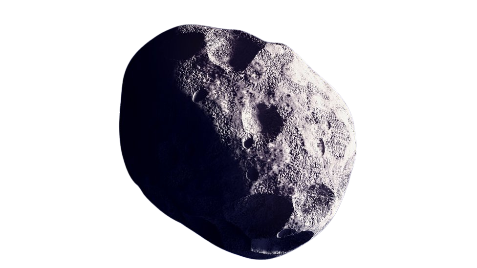

Home
Cool Facts
Gallery
Future
Home
Cool Facts
Gallery
Future

Because of the extreme heat and pressure on Neptune and Uranus, scientists believe it literally rains diamonds on those planets.

Scientists have discovered a rocky "super-Earth" named 55 Cancri e that is thought to be covered in graphite and diamond, making it potentially worth millions of times the entire global economy.

Because the Moon has no atmosphere and no wind, the footprints left by Apollo astronauts will remain perfectly preserved for millions of years.

The Sun is massive, making up about 99.86% of the entire mass of our solar system.

The average distance to our Moon is 238,855 miles. It is so incredibly vast that all the other planets in our solar system could comfortably fit side-by-side within that distance.

Sound waves require a medium (like air or water) to travel through. Because outer space is a vacuum, you would not be able to hear anything—no explosions, no rocket engines, just pure quiet.

The gravity in a black hole is so strong that if you fell in, you would be stretched out like a noodle—a scientific process officially known as "spaghettification".

Because of how fine dust scatters light on the Martian surface, sunsets on Mars appear a stunning blue.

The Moon is incredibly far away, sitting an average of 238,855 miles away from us. When the Moon is at its farthest distance from Earth, there is so much empty space that you could perfectly line up all the other seven planets in our solar system between us!